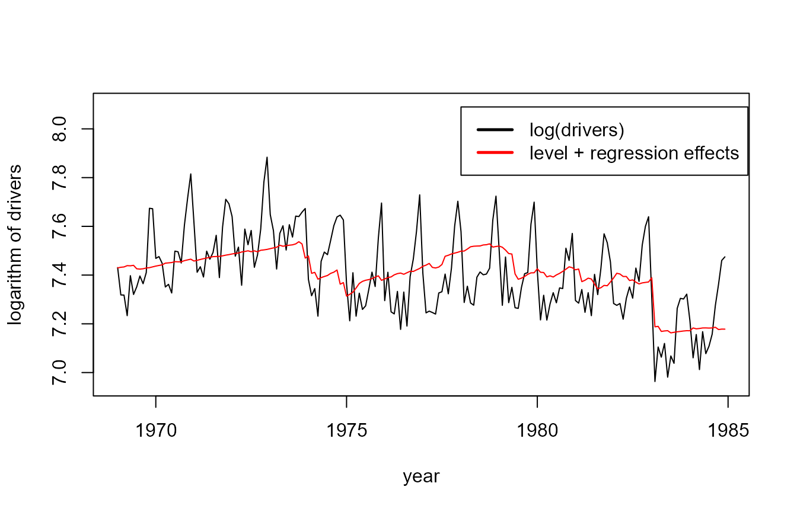
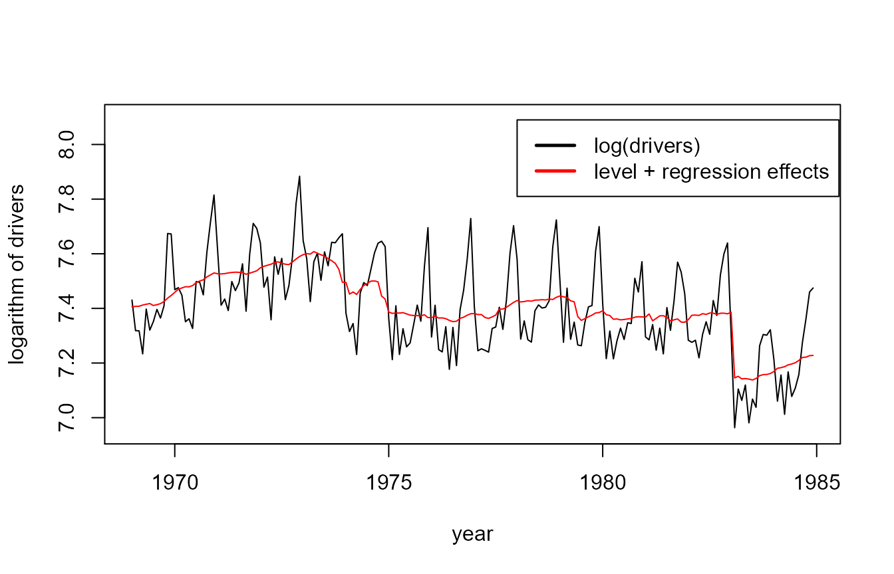

A lot of time series exhibit some form of seasonality. An example of such a time series is the UK Road Deaths dataset, see ?Seatbelts for details about this dataset. In this vignette you will learn how to deal with this seasonality using the statespacer package. Moreover, you will learn how to add explanatory variables to the State Space model, and how to estimate multivariate models if there is more than one dependent variable available. We also show you how to control the variance - covariance matrices of the various components. The UK Road Deaths dataset provides to be an excellent dataset at hand to showcase all of these functionalities of the statespacer package! The approach used in this document follows that of Commandeur and Koopman (2007).
To start, we need to load the package and the dataset. We also log-transform the dependent variables, and some of the explanatory variables.
# Load statespacer library(statespacer) # Load the dataset library(datasets) Data <- Seatbelts # Data preparation # The log of "drivers", "front", and "rear" will be used as dependent variables # The log of "PetrolPrice" and "kms" will be used as explanatory variables Data[, c("drivers", "front", "rear", "PetrolPrice", "kms")] <- log(Data[, c("drivers", "front", "rear", "PetrolPrice", "kms")])
We start off with estimating a univariate model for the “drivers” variable. We specify a deterministic seasonal component of period 12, and a deterministic level. Furthermore, we take the log of “PetrolPrice” together with the “law” dummy as explanatory variables.
# Dependent variable y <- as.matrix(Data[, "drivers"]) # Period of the seasonal component BSM_vec <- 12 # Explanatory variables # Note: Must be a list of matrices! # Each dependent gets its own matrix of explanatory variables. addvar_list <- list(as.matrix(Data[, c("PetrolPrice", "law")])) # Format of the variance - covariance matrix of the level component # By setting the elements of this matrix to 0, # the component becomes deterministic. format_level <- matrix(0) # Format of the variance - covariance matrix of the seasonal component # Note: This format must be a list of matrices, because multiple # seasonalities can be specified! format_BSM_list <- list(matrix(0)) # Fitting the model fit <- statespacer(y = y, local_level_ind = TRUE, BSM_vec = BSM_vec, addvar_list = addvar_list, format_level = format_level, format_BSM_list = format_BSM_list, method = "BFGS", initial = 0.5 * log(var(y)), verbose = TRUE) #> Starting the optimisation procedure at: 2020-07-16 09:21:48 #> Parameter scaling:[1] 1 #> initial value -0.443442 #> final value -0.735372 #> converged #> Finished the optimisation procedure at: 2020-07-16 09:21:48 #> Time difference of 0.139727830886841 secs
Let’s check out the estimates:
# The estimated variance of the observation disturbance fit$system_matrices$H$H #> [,1] #> [1,] 0.007402481 # Smoothed estimate of the level fit$smoothed$level[1,] #> [1] 6.401571 # Smoothed estimate of the coefficient of log "PetrolPrice" fit$smoothed$addvar_coeff[1, 1] #> [1] -0.4521301 # Smoothed estimate of the coefficient of the "law" dummy fit$smoothed$addvar_coeff[1, 2] #> [1] -0.1971395 # Plot the data next to the smoothed level + explanatory variables components plot(Data[, c("drivers")], type = "l", ylim = c(6.95, 8.1), xlab = "year", ylab = "logarithm of drivers") lines(seq(tsp(Data)[1], tsp(Data)[2], 1/tsp(Data)[3]), fit$smoothed$level + fit$smoothed$addvar, type = 'l', col = "red") legend(1978, 8.09, c("log(drivers)", "level + regression effects"), lty = c(1,1), lwd=c(2.5, 2.5), col = c("black", "red"))

Now, let’s specify a stochastic level and seasonal component. This can be done by setting the entries in the format of the components to 1.
# By setting the entries in the format to 1, the component becomes stochastic format_level <- matrix(1) format_BSM_list <- list(matrix(1)) fit <- statespacer(y = y, local_level_ind = TRUE, BSM_vec = BSM_vec, addvar_list = addvar_list, format_level = format_level, format_BSM_list = format_BSM_list, method = "BFGS", initial = log(var(y)), verbose = TRUE) #> Starting the optimisation procedure at: 2020-07-16 09:21:49 #> Parameter scaling:[1] 1 1 1 #> initial value -0.172423 #> iter 10 value -0.893962 #> iter 20 value -0.915493 #> iter 30 value -0.915515 #> final value -0.915517 #> converged #> Finished the optimisation procedure at: 2020-07-16 09:21:51 #> Time difference of 1.83332705497742 secs # The estimated variance of the observation disturbance fit$system_matrices$H$H #> [,1] #> [1,] 0.003786183 # The estimated variance of the level disturbance fit$system_matrices$Q$level #> [,1] #> [1,] 0.0002676875 # The estimated variance of the seasonal disturbance fit$system_matrices$Q$BSM12 #> [,1] #> [1,] 1.161438e-06 # Smoothed estimate of the coefficient of log "PetrolPrice" fit$smoothed$addvar_coeff[1, 1] #> [1] -0.2913944 # Smoothed estimate of the coefficient of the "law" dummy fit$smoothed$addvar_coeff[1, 2] #> [1] -0.2377374 # Plot the data next to the smoothed level + explanatory variables components plot(Data[, c("drivers")], type = "l", ylim = c(6.95, 8.1), xlab = "year", ylab = "logarithm of drivers") lines(seq(tsp(Data)[1], tsp(Data)[2], 1/tsp(Data)[3]), fit$smoothed$level + fit$smoothed$addvar, type = 'l', col = "red") legend(1978, 8.09, c("log(drivers)", "level + regression effects"), lty = c(1,1), lwd=c(2.5, 2.5), col = c("black", "red"))

Plotting the stochastic seasonal, we can see that it barely changes over time, which is in line with the near zero value of its variance. It might be worthwhile to set the seasonal component to be deterministic, while letting the level be stochastic. I’ll leave that as an exercise for you. You can compare the AICs of both models, and see which one scores better!
# Plot the stochastic seasonal plot(seq(tsp(Data)[1], tsp(Data)[2], 1/tsp(Data)[3]), fit$smoothed$BSM12, type = "l", ylim = c(-0.2, 0.3), xlab = "year", ylab = "stochastic seasonal") abline(h = 0)
And for the sake of completeness, the irregular component:
The previous models dealt with a univariate series. However, it might be interesting to model multiple series simultaneously. In this section we’ll just do that. We’ll take the logs of “front” and “rear” as dependent variables, the “law” dummy together with the logs of “PetrolPrice” and “kms” as explanatory variables, a stochastic local level component, and a deterministic seasonal component with period 12.
# Dependent variable y <- as.matrix(Data[, c("front", "rear")]) # Explanatory variables # Note: Must be a list of matrices! # Each dependent gets its own matrix of explanatory variables. X <- as.matrix(Data[, c("PetrolPrice", "kms", "law")]) addvar_list <- list(X, X) # Format of the variance - covariance matrix of the level component # Note: Only the lower triangular part of the format is used. # The format specifies which elements in the matrices L and D should be # non-zero, where L and D are the matrices of the Cholesky LDL decomposition. # The diagonal is used to specify which elements of the Diagonal matrix # should be non-zero. The lower triangular part excluding the diagonal # specifies which elements in the Loading matrix should be non-zero. format_level <- matrix(1, 2, 2) # Format of the variance - covariance matrix of the seasonal component # Note: This format must be a list of matrices, because multiple seasonalities # can be specified! format_BSM_list <- list(matrix(0, 2, 2)) # Format of the variance - covariance matrix of the observation disturbances H_format <- matrix(1, 2, 2) # Fitting the model fit <- statespacer(y = y, H_format = H_format, local_level_ind = TRUE, BSM_vec = BSM_vec, addvar_list = addvar_list, format_level = format_level, format_BSM_list = format_BSM_list, method = "BFGS", initial = 0.5 * log(diag(var(y))), verbose = TRUE) #> Starting the optimisation procedure at: 2020-07-16 09:21:52 #> Parameter scaling:[1] 1 1 1 1 1 1 #> initial value 0.389588 #> iter 10 value -1.583525 #> iter 20 value -1.676129 #> iter 30 value -1.676530 #> final value -1.676537 #> converged #> Finished the optimisation procedure at: 2020-07-16 09:22:17 #> Time difference of 24.9493181705475 secs
Checking out the estimates and plotting the levels:
# The estimated variance - covariance matrix of the observation disturbance fit$system_matrices$H$H #> [,1] [,2] #> [1,] 0.005402166 0.004449533 #> [2,] 0.004449533 0.008566858 # The estimated variance - covariance matrix of the level disturbance fit$system_matrices$Q$level #> [,1] [,2] #> [1,] 0.0002556392 0.0002247045 #> [2,] 0.0002247045 0.0002319561 # Coefficients + T-stats coeff <- cbind( c("front PetrolPrice", "front kms", "front law", "rear PetrolPrice", "rear kms", "rear law"), fit$smoothed$addvar_coeff[1,], fit$smoothed$addvar_coeff[1,] / fit$smoothed$addvar_coeff_se[1,] ) colnames(coeff) <- c("Variable", "Coefficient", "T-Stat") coeff #> Variable Coefficient T-Stat #> [1,] "front PetrolPrice" "-0.307614724757934" "-2.89859452991685" #> [2,] "front kms" "0.151804533911315" "1.16776553839529" #> [3,] "front law" "-0.337045855757879" "-6.84659000022703" #> [4,] "rear PetrolPrice" "-0.0857571166694399" "-0.763994133813057" #> [5,] "rear kms" "0.55038864207041" "3.7926934801759" #> [6,] "rear law" "0.000887675974277226" "0.0171342279607704" # plot of level for "front" plot(seq(tsp(Data)[1], tsp(Data)[2], 1/tsp(Data)[3]), fit$smoothed$level[, 1], type = "l", xlab = "year", ylab = "level of front passengers")
# plot of level for "rear" plot(seq(tsp(Data)[1], tsp(Data)[2], 1/tsp(Data)[3]), fit$smoothed$level[, 2], type = "l", xlab = "year", ylab = "level of rear passengers")
We see that the levels closely resemble each other. In fact, their correlation is almost equal to 1:
fit$system_matrices$Q_correlation_matrix$level #> [,1] [,2] #> [1,] 1.0000000 0.9227738 #> [2,] 0.9227738 1.0000000
It is possible to restrict the rank of the variance - covariance matrix of the level component to be 1. This can be done by setting format_level as follows:
format_level <- matrix(0, 2, 2) format_level[, 1] <- 1
Feel free to estimate the model with this new specification yourself! I’d also suggest dropping the “law” dummy for the “rear” passengers, but keeping it in for the “front” passengers.